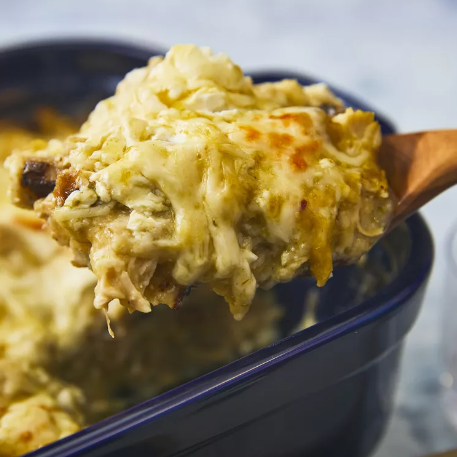

Enchilada

Quick and Easy Green Chile Chicken Enchilada Casserole
4 skinless, boneless chicken breast halves
garlic salt to taste
18 (6 inch) corn tortillas, torn in half
1 (28 ounce) can green chile enchilada sauce
1 (16) ounce package shredded Monterey Jack Cheese
1 (8 ounce) container reduced fat sour cream
Instructions
Preheat oven to 350 degrees F. Lightly grease a medium baking dish
Season chicken with garlic salt; arrange in the prepared baking dish
Bake in the preheated oven until no longer pink and the juices run clear, about 45 minutes
Cool, shred, and set aside
Meanwhile,char each tortilla half over the open flame of a gas stove using metal tongs until lightly puffed, about 1 minute
Pour about 1/2 inch enchilada sauce into the bottom of a medium baking dish; arrange 6 tortillas in a single layer on top.
Sprinkle with 1/2 of the chicken, 1/3 of the cheese, 1/2 the sour cream, and 1/3 of remaining enchilada sauce
Repeat Layers
Coat remaining tortillas thoroughly with some of the remaining enchilada sauce and arrange on top.
Sprinkle with remaining cheese and top with any remaining enchilada sauce
Cover and bake in the preheated over for 45 minutes. Cool slightly before serving
Top with pico de gallo if desired